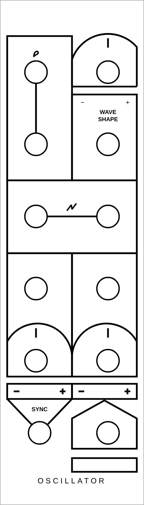

Oscillator (1973)
Paperface Oscillator
The original paperface VCO: a sine-to-saw waveshaper under voltage control, two frequency inputs, hard sync and AC / DC outputs.
- Design
- Serge Tcherepnin, 1973
- Function
- Oscillator
- Panel widths
- 2"
- Build options
- 2
Panels in this repo


How it works
A single voltage-controlled oscillator. Its waveshaper morphs the output smoothly from sine to sawtooth, set by the WAVE SHAPE knob and its voltage control.
Two frequency control inputs, each with its own level knob, set the pitch: use one for a keyboard or sequencer and the other for frequency modulation.
A sync input hard-syncs the oscillator to another. The outputs come both AC coupled (for audio) and DC coupled (for use as a control voltage).
Controls and jacks
| Name | Type | What it does |
|---|---|---|
| Waveshape output and WAVE SHAPE | output + knob / VC | Sine to sawtooth under manual and voltage control. |
| Saw / pulse outputs | outputs | Further waveforms (see panel). |
| Two VC inputs with knobs | inputs | Frequency control and FM. |
| SYNC | input | Hard sync. |
| Frequency | knob | Manual pitch. |
Build options
Prism Circuits 1973 Oscillator
- Offered as
- PCB for a 4U paperface panel (also an LW-format version)
- Format
- 4U Serge, paperface
- Schematic
- not publishedNot published by Prism
- BOM
- availablePrism BOM, kept as a Mouser cart (linked below)
- Mouser cart
- Prism Mouser cart (the Prism BOM)
The maker's own shared Mouser project: open it and choose "Buy selected items". Check what it leaves out (often pots, knobs, jacks and headers). - Documents
- Prism BOM list
Serge 1973 paperface manual: the Oscillator (NYU IDM scan)
Ken Stone CGS48 VCO, built to replace the 1973 Serge VCOs, with schematic
LW-format version: https://prismcircuits.net/products/1973-oscillator
Prism's product page also links its own panel art; that artwork is Prism's and is not copied here.
Elby / CGS CGS507 1973 VCO
- Offered as
- PCB (1" x 6") from Elby Designs
- PCB
- Elby Designs: CGS507 1973 VCO
- Schematic
- listed, not linked yetOn the Elby CGS507 page
- BOM
- listed, not linked yetOn the Elby CGS507 page
Like the original, the CGS507 has no 1V/octave input: the scalable CV A input together with FREQUENCY gives tonal tracking, and CV B can act as a fine tune.
Ranges per Elby: CV A, CV B and WAVE SHAPER 0 to +5 V; outputs SHAPED and SAW in AC (-2.5 to +2.5 V) and DC (0 to +5 V) versions; 16 Hz to over 16 kHz.
Ken Stone's Serge-derived designs may be built for personal use only; Serge Tcherepnin keeps all rights to his circuits. Schematics, parts lists and PCBs belong to their designers and sellers, so these pages link to them rather than copying them.
Bill of materials
Spreadsheet: oscillator-1973.csv (CSV; opens in Excel, Numbers or Google Sheets). It lists the parts for every build option: Ken Stone's parts lists, and the parts data from Low-Gain's, Prism's and Elby's own BOMs where they publish one.
The makers' parts lists were copied into the spreadsheet automatically from their PDFs and Mouser carts (values, quantities and reference designators only; each row links its source). Check them against the maker's current BOM before ordering, and read the maker's notes there: they are not repeated here.
Order from Mouser: oscillator-1973__prism_cart.csv (35 lines, about $35.20 at single-unit prices). Files ending _cart are made from a maker's own Mouser cart. Upload one at Mouser's BOM tool (it reads the Mouser and manufacturer part number columns). Parts Mouser doesn't stock are listed in oscillator-1973__prism_cart_not_at_mouser.csv.
Makers' Mouser carts: Prism Circuits 1973 Oscillator: Prism Mouser cart (the Prism BOM). Each opens the maker's shared Mouser project, where you can add the whole list to your cart. They are kept by the makers, so they follow the current board revision, but some of their parts were out of stock or obsolete on 21 Nov 2026. The _cart upload files above are the same lists with those parts swapped for in-stock equivalents, so use them if Mouser shows a part as backordered.
All builds (3 lines)
| Section | Type | Value / part | Qty | Notes |
|---|---|---|---|---|
| Front panel (Paperface (1973)) | Panel hardware | Banana jack, colour not recorded | 8 | 4 mm |
| Front panel (Paperface (1973)) | Panel hardware | Potentiometer + knob | 4 | value from the board BOM |
| Front panel (Paperface (1973)) | Panel hardware | Knob | 4 | one per pot |
Prism Circuits 1973 Oscillator (35 lines)
| Section | Type | Value / part | Qty | Notes |
|---|---|---|---|---|
| Prism Oscillator | Capacitor | 82pF | 2 | MLCC 25V 82pF C0G 10% LS=5.08mm; from Prism's Mouser cart: https://www.mouser.com/ProjectManager/ProjectDetail.aspx?AccessID=f9c0e7fd0d |
| Prism Oscillator | Resistor | 82k | 1 | R 82K ohm 5%; from Prism's Mouser cart: https://www.mouser.com/ProjectManager/ProjectDetail.aspx?AccessID=f9c0e7fd0d |
| Prism Oscillator | Resistor | 4k7 | 1 | R 4.7K ohm 1/4W 5%; from Prism's Mouser cart: https://www.mouser.com/ProjectManager/ProjectDetail.aspx?AccessID=f9c0e7fd0d |
| Prism Oscillator | Resistor | 4M7 | 1 | R 4.7M ohm 1/4W 5%; from Prism's Mouser cart: https://www.mouser.com/ProjectManager/ProjectDetail.aspx?AccessID=f9c0e7fd0d |
| Prism Oscillator | Resistor | 3k3 | 2 | R 3.3K ohm 1/4W 5%; from Prism's Mouser cart: https://www.mouser.com/ProjectManager/ProjectDetail.aspx?AccessID=f9c0e7fd0d |
| Prism Oscillator | Resistor | 3M3 | 1 | R 3.3M ohm 5%; from Prism's Mouser cart: https://www.mouser.com/ProjectManager/ProjectDetail.aspx?AccessID=f9c0e7fd0d |
| Prism Oscillator | Capacitor | 33pF | 1 | MLCC 33pF 50volts C0G 5% 5.0mm L/S; from Prism's Mouser cart: https://www.mouser.com/ProjectManager/ProjectDetail.aspx?AccessID=f9c0e7fd0d |
| Prism Oscillator | Resistor | 33k | 2 | R 33K ohm 1/4W 5%; from Prism's Mouser cart: https://www.mouser.com/ProjectManager/ProjectDetail.aspx?AccessID=f9c0e7fd0d |
| Prism Oscillator | Resistor | 330k | 5 | R 330K ohm 5%; from Prism's Mouser cart: https://www.mouser.com/ProjectManager/ProjectDetail.aspx?AccessID=f9c0e7fd0d |
| Prism Oscillator | Resistor | 330R | 4 | R 330ohm 1/4W 5%; from Prism's Mouser cart: https://www.mouser.com/ProjectManager/ProjectDetail.aspx?AccessID=f9c0e7fd0d |
| Prism Oscillator | Resistor | 2k2 | 1 | R 2.2K ohm 1/4W 5%; from Prism's Mouser cart: https://www.mouser.com/ProjectManager/ProjectDetail.aspx?AccessID=f9c0e7fd0d |
| Prism Oscillator | Capacitor | 0.027uF | 1 | Film 63V 0.027uF 5% LS=5mm; from Prism's Mouser cart: https://www.mouser.com/ProjectManager/ProjectDetail.aspx?AccessID=f9c0e7fd0d |
| Prism Oscillator | Resistor | 22k | 6 | R 22K ohm 1/4W 5%; from Prism's Mouser cart: https://www.mouser.com/ProjectManager/ProjectDetail.aspx?AccessID=f9c0e7fd0d |
| Prism Oscillator | Resistor | 1M5 | 2 | R 1.5M ohm 5%; from Prism's Mouser cart: https://www.mouser.com/ProjectManager/ProjectDetail.aspx?AccessID=f9c0e7fd0d |
| Prism Oscillator | Resistor | 1M | 2 | R 1M ohm 5%; from Prism's Mouser cart: https://www.mouser.com/ProjectManager/ProjectDetail.aspx?AccessID=f9c0e7fd0d |
| Prism Oscillator | Resistor | 15k | 1 | R 15K ohm 1/4W 5%; from Prism's Mouser cart: https://www.mouser.com/ProjectManager/ProjectDetail.aspx?AccessID=f9c0e7fd0d |
| Prism Oscillator | Capacitor | 47uF | 2 | Elec 16VDC 47uF SU; in-stock replacement for 667-ECE-A1CKA470I (47uF 16V: the Panasonic part was backordered with a long lead time); from Prism's Mouser cart: https://www.mouser.com/ProjectManager/ProjectDetail.aspx?AccessID=f9c0e7fd0d |
| Prism Oscillator | Capacitor | 10uF | 2 | Elec 10UF 25V KS RADIAL; from Prism's Mouser cart: https://www.mouser.com/ProjectManager/ProjectDetail.aspx?AccessID=f9c0e7fd0d |
| Prism Oscillator | Hardware | 640456-4 | 1 | Headers & Wire Housings FRICTION LCK HDR 4P Stra; from Prism's Mouser cart: https://www.mouser.com/ProjectManager/ProjectDetail.aspx?AccessID=f9c0e7fd0d |
| Prism Oscillator | Potentiometer | 50k | 4 | Potentiometers 9mm 50K ohm; from Prism's Mouser cart: https://www.mouser.com/ProjectManager/ProjectDetail.aspx?AccessID=f9c0e7fd0d |
| Prism Oscillator | Resistor | 1k | 3 | R 1K ohm 1/4W 5%; from Prism's Mouser cart: https://www.mouser.com/ProjectManager/ProjectDetail.aspx?AccessID=f9c0e7fd0d |
| Prism Oscillator | Capacitor | 47pF | 1 | MLCC RAD 50V 47pF C0G 5% LS:5mm; from Prism's Mouser cart: https://www.mouser.com/ProjectManager/ProjectDetail.aspx?AccessID=f9c0e7fd0d |
| Prism Oscillator | Capacitor | 4.7uF | 1 | Elec 50VDC 4.7uF 20%; from Prism's Mouser cart: https://www.mouser.com/ProjectManager/ProjectDetail.aspx?AccessID=f9c0e7fd0d |
| Prism Oscillator | Jack | Banana Violet | 1 | Jack BANANA JACK VIOLET; from Prism's Mouser cart: https://www.mouser.com/ProjectManager/ProjectDetail.aspx?AccessID=f9c0e7fd0d |
| Prism Oscillator | Jack | Black Banana Jack | 2 | Jack Black Banana Jack; from Prism's Mouser cart: https://www.mouser.com/ProjectManager/ProjectDetail.aspx?AccessID=f9c0e7fd0d |
| Prism Oscillator | Jack | Banana Blue | 5 | Jack BANANA JACK BLUE; from Prism's Mouser cart: https://www.mouser.com/ProjectManager/ProjectDetail.aspx?AccessID=f9c0e7fd0d |
| Prism Oscillator | Capacitor | 0.1uF | 1 | MLCC .1UF 50V 10% 5.0MM; from Prism's Mouser cart: https://www.mouser.com/ProjectManager/ProjectDetail.aspx?AccessID=f9c0e7fd0d |
| Prism Oscillator | Trimmer | 25k | 3 | Trimmer 1/4"SQ 25KOHMS; from Prism's Mouser cart: https://www.mouser.com/ProjectManager/ProjectDetail.aspx?AccessID=f9c0e7fd0d |
| Prism Oscillator | Transistor | 2N3904BU | 3 | BJT NPN Transistor General; from Prism's Mouser cart: https://www.mouser.com/ProjectManager/ProjectDetail.aspx?AccessID=f9c0e7fd0d |
| Prism Oscillator | Capacitor | 0.01uF | 1 | Film 100V 0.01 uF 10% LS=5 mm; from Prism's Mouser cart: https://www.mouser.com/ProjectManager/ProjectDetail.aspx?AccessID=f9c0e7fd0d |
| Prism Oscillator | Resistor | 10k | 1 | R 10kOhms 1/4W 5%; from Prism's Mouser cart: https://www.mouser.com/ProjectManager/ProjectDetail.aspx?AccessID=f9c0e7fd0d |
| Prism Oscillator | Resistor | 100k | 2 | R 100K ohm 1/4W 5%; from Prism's Mouser cart: https://www.mouser.com/ProjectManager/ProjectDetail.aspx?AccessID=f9c0e7fd0d |
| Prism Oscillator | Switch | 1N4148 | 3 | Small Signal Switching Diode; from Prism's Mouser cart: https://www.mouser.com/ProjectManager/ProjectDetail.aspx?AccessID=f9c0e7fd0d |
| Prism Oscillator | IC | LM3900N | 1 | OpAmp Quad; from Prism's Mouser cart: https://www.mouser.com/ProjectManager/ProjectDetail.aspx?AccessID=f9c0e7fd0d |
| Prism Oscillator | Resistor | 15R | 1 | R 15ohms 5%; from Prism's Mouser cart: https://www.mouser.com/ProjectManager/ProjectDetail.aspx?AccessID=f9c0e7fd0d |
Elby / CGS CGS507 1973 VCO (39 lines)
| Section | Type | Value / part | Qty | Notes |
|---|---|---|---|---|
| Elby CGS507 - 1973 VCO kit | Capacitor | 33pF | 1 | C4; 33pF 5% Ceramic; from Elby's kit BOM: https://www.elby-designs.com/webtek/cgs/serge/cgs507/kc-7-cgs507.pdf |
| Elby CGS507 - 1973 VCO kit | Capacitor | 47pF | 1 | C2; 47pF 5% Ceramic; from Elby's kit BOM: https://www.elby-designs.com/webtek/cgs/serge/cgs507/kc-7-cgs507.pdf |
| Elby CGS507 - 1973 VCO kit | Capacitor | 82pF | 1 | C8; 82pF 5% Ceramic; from Elby's kit BOM: https://www.elby-designs.com/webtek/cgs/serge/cgs507/kc-7-cgs507.pdf |
| Elby CGS507 - 1973 VCO kit | Capacitor | 1nF | 1 | C3; 1nF 63V Polyester; from Elby's kit BOM: https://www.elby-designs.com/webtek/cgs/serge/cgs507/kc-7-cgs507.pdf |
| Elby CGS507 - 1973 VCO kit | Capacitor | 10nF | 1 | C1; 10nF 63V Polyester; from Elby's kit BOM: https://www.elby-designs.com/webtek/cgs/serge/cgs507/kc-7-cgs507.pdf |
| Elby CGS507 - 1973 VCO kit | Capacitor | 100nF | 2 | C12,C13; 100nF Ceramic; from Elby's kit BOM: https://www.elby-designs.com/webtek/cgs/serge/cgs507/kc-7-cgs507.pdf |
| Elby CGS507 - 1973 VCO kit | Capacitor | 4.7uF | 1 | C7; 4.7uF 25V Electrolytic; from Elby's kit BOM: https://www.elby-designs.com/webtek/cgs/serge/cgs507/kc-7-cgs507.pdf |
| Elby CGS507 - 1973 VCO kit | Capacitor | 10uF | 2 | C10,C11; 10uF 35V Electrolytic; from Elby's kit BOM: https://www.elby-designs.com/webtek/cgs/serge/cgs507/kc-7-cgs507.pdf |
| Elby CGS507 - 1973 VCO kit | Capacitor | 47uF | 2 | C6,C9; 47uF Electrolytic; from Elby's kit BOM: https://www.elby-designs.com/webtek/cgs/serge/cgs507/kc-7-cgs507.pdf |
| Elby CGS507 - 1973 VCO kit | Hardware | CRIMP - KK396 | 4 | J9^4; from Elby's kit BOM: https://www.elby-designs.com/webtek/cgs/serge/cgs507/kc-7-cgs507.pdf |
| Elby CGS507 - 1973 VCO kit | Hardware | KK396 - 4-way Crimp Housing | 1 | J9; from Elby's kit BOM: https://www.elby-designs.com/webtek/cgs/serge/cgs507/kc-7-cgs507.pdf |
| Elby CGS507 - 1973 VCO kit | Hardware | 14-pin IC Socket 0.3inch | 1 | U1; from Elby's kit BOM: https://www.elby-designs.com/webtek/cgs/serge/cgs507/kc-7-cgs507.pdf |
| Elby CGS507 - 1973 VCO kit | Hardware | KK396 - 4-way Straight - Locking Header | 1 | J9; from Elby's kit BOM: https://www.elby-designs.com/webtek/cgs/serge/cgs507/kc-7-cgs507.pdf |
| Elby CGS507 - 1973 VCO kit | Diode | 1N4148 | 3 | D1,D2,D3; from Elby's kit BOM: https://www.elby-designs.com/webtek/cgs/serge/cgs507/kc-7-cgs507.pdf |
| Elby CGS507 - 1973 VCO kit | IC | LM3900 - Quad Norton Amplifier | 1 | U1; from Elby's kit BOM: https://www.elby-designs.com/webtek/cgs/serge/cgs507/kc-7-cgs507.pdf |
| Elby CGS507 - 1973 VCO kit | Hardware | Ferrite Bead - 5A | 2 | L1,L2; from Elby's kit BOM: https://www.elby-designs.com/webtek/cgs/serge/cgs507/kc-7-cgs507.pdf |
| Elby CGS507 - 1973 VCO kit | Resistor | 15R | 1 | R14; 15R 1% 0.5W Metal Film; from Elby's kit BOM: https://www.elby-designs.com/webtek/cgs/serge/cgs507/kc-7-cgs507.pdf |
| Elby CGS507 - 1973 VCO kit | Resistor | 330R | 3 | R21,R23,R33; 330R 1% 0.5W Metal Film; from Elby's kit BOM: https://www.elby-designs.com/webtek/cgs/serge/cgs507/kc-7-cgs507.pdf |
| Elby CGS507 - 1973 VCO kit | Resistor | 470R | 1 | R35; 470R 1% 0.5W Metal Film; from Elby's kit BOM: https://www.elby-designs.com/webtek/cgs/serge/cgs507/kc-7-cgs507.pdf |
| Elby CGS507 - 1973 VCO kit | Resistor | 1K0 | 2 | R18,R26; 1K0 1% 0.5W Metal Film; from Elby's kit BOM: https://www.elby-designs.com/webtek/cgs/serge/cgs507/kc-7-cgs507.pdf |
| Elby CGS507 - 1973 VCO kit | Resistor | 3K3 | 2 | R15,R22; 3K3 1% 0.5W Metal Film; from Elby's kit BOM: https://www.elby-designs.com/webtek/cgs/serge/cgs507/kc-7-cgs507.pdf |
| Elby CGS507 - 1973 VCO kit | Resistor | 10K | 3 | R32,R34,R36; 10K 1% 0.5W Metal Film; from Elby's kit BOM: https://www.elby-designs.com/webtek/cgs/serge/cgs507/kc-7-cgs507.pdf |
| Elby CGS507 - 1973 VCO kit | Resistor | 15K | 1 | R12; 15K 1% 0.5W Metal Film; from Elby's kit BOM: https://www.elby-designs.com/webtek/cgs/serge/cgs507/kc-7-cgs507.pdf |
| Elby CGS507 - 1973 VCO kit | Resistor | 22K | 5 | R3,R4,R7,R8,R20; 22K 1% 0.5W Metal Film; from Elby's kit BOM: https://www.elby-designs.com/webtek/cgs/serge/cgs507/kc-7-cgs507.pdf |
| Elby CGS507 - 1973 VCO kit | Resistor | 30K | 1 | R37; 30K 1% 0.5W Metal Film; from Elby's kit BOM: https://www.elby-designs.com/webtek/cgs/serge/cgs507/kc-7-cgs507.pdf |
| Elby CGS507 - 1973 VCO kit | Resistor | 33K | 3 | R17,R28,R31; 33K 1% 0.5W Metal Film; from Elby's kit BOM: https://www.elby-designs.com/webtek/cgs/serge/cgs507/kc-7-cgs507.pdf |
| Elby CGS507 - 1973 VCO kit | Resistor | 82K | 1 | R16; 82K 1% 0.5W Metal Film; from Elby's kit BOM: https://www.elby-designs.com/webtek/cgs/serge/cgs507/kc-7-cgs507.pdf |
| Elby CGS507 - 1973 VCO kit | Resistor | 100K | 2 | R19,R24; 100K 1% 0.5W Metal Film; from Elby's kit BOM: https://www.elby-designs.com/webtek/cgs/serge/cgs507/kc-7-cgs507.pdf |
| Elby CGS507 - 1973 VCO kit | Resistor | 220K | 1 | R25; 220K 1% 0.5W Metal Film; from Elby's kit BOM: https://www.elby-designs.com/webtek/cgs/serge/cgs507/kc-7-cgs507.pdf |
| Elby CGS507 - 1973 VCO kit | Resistor | 330K | 4 | R5,R6,R9,R10; 330K 1% 0.5W Metal Film; from Elby's kit BOM: https://www.elby-designs.com/webtek/cgs/serge/cgs507/kc-7-cgs507.pdf |
| Elby CGS507 - 1973 VCO kit | Resistor | 910K | 1 | R1; 910K 1% 0.5W Metal Film; from Elby's kit BOM: https://www.elby-designs.com/webtek/cgs/serge/cgs507/kc-7-cgs507.pdf |
| Elby CGS507 - 1973 VCO kit | Resistor | 1M0 | 1 | R11; 1M0 1% 0.5W Metal Film; from Elby's kit BOM: https://www.elby-designs.com/webtek/cgs/serge/cgs507/kc-7-cgs507.pdf |
| Elby CGS507 - 1973 VCO kit | Resistor | 1M5 | 2 | R29,R30; 1M5 1% 0.5W Metal Film; from Elby's kit BOM: https://www.elby-designs.com/webtek/cgs/serge/cgs507/kc-7-cgs507.pdf |
| Elby CGS507 - 1973 VCO kit | Resistor | 3M3 | 1 | R2; 3M3 1% 0.5W Metal Film; from Elby's kit BOM: https://www.elby-designs.com/webtek/cgs/serge/cgs507/kc-7-cgs507.pdf |
| Elby CGS507 - 1973 VCO kit | Resistor | 4M7 | 1 | R27; 4M7 1% 0.5W Metal Film; from Elby's kit BOM: https://www.elby-designs.com/webtek/cgs/serge/cgs507/kc-7-cgs507.pdf |
| Elby CGS507 - 1973 VCO kit | Resistor | 10M | 1 | R13; 10M 1% 0.5W Metal Film; from Elby's kit BOM: https://www.elby-designs.com/webtek/cgs/serge/cgs507/kc-7-cgs507.pdf |
| Elby CGS507 - 1973 VCO kit | Transistor | 2N3904 NPN Transistor | 3 | Q1,Q2,Q3; from Elby's kit BOM: https://www.elby-designs.com/webtek/cgs/serge/cgs507/kc-7-cgs507.pdf |
| Elby CGS507 - 1973 VCO kit | Trimmer | 10K MTV Cermet | 1 | P3; from Elby's kit BOM: https://www.elby-designs.com/webtek/cgs/serge/cgs507/kc-7-cgs507.pdf |
| Elby CGS507 - 1973 VCO kit | Trimmer | 20K MTV Cermet | 2 | P5,P6; from Elby's kit BOM: https://www.elby-designs.com/webtek/cgs/serge/cgs507/kc-7-cgs507.pdf |
Panel hardware
Front-panel parts for each panel in this repo, counted from the panel files. Board parts (resistors, ICs, trimmers) are in each build option's own BOM.
Paperface (1973)
| Part | Qty | Note |
|---|---|---|
| Banana jack, colour not recorded | 8 | 4 mm |
| Potentiometer + knob | 4 | value from the board BOM |